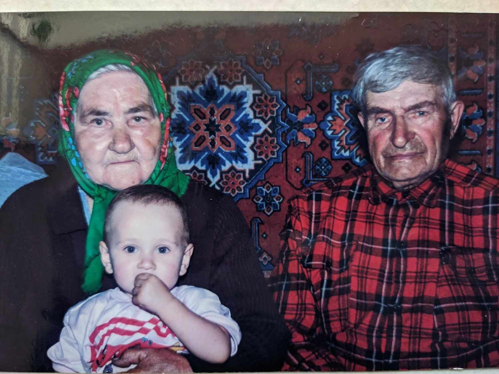

<!-- saved from url=(0016)http://localhost -->
<!DOCTYPE html>
<html xmlns="http://www.w3.org/1999/xhtml" lang="en" xml:lang="en" dir="ltr">
<head>
<meta http-equiv="Content-Type" content="text/html; charset=utf-8" />
<style type="text/css">
html, body { width:100%; height:100%; padding:0; margin:0; }
body { -ms-overflow-style: none; overflow:auto; overflow-x:hidden; }
* { padding: 0; margin: 0; border: 0; font-family: Arial; font-size: 10pt; line-height: 1.3em; word-wrap: break-word; text-indent: 0; text-align: left; }
h1 { font-size: 1.4em; font-weight: normal; margin-bottom: 0.8em; text-align: center; }
h2 { font-weight: bold; margin-bottom: 0.5em; }
p { margin-bottom: 1em; }
a { text-decoration: none; color: #0000FF; }
a:hover, a:visited { text-decoration: none; }
.c { clear: both; }
.cwrap { margin: 0.8em; }
.reps { padding-top: 5px; border-top: 1px solid #000; font-size: 0.8em; }
.mblock { display:inline-block; float: left; font-size: 0.8em; margin: 0 1em 0.3em 0; padding: 0; }
.m1block { float: left; font-size: 0.8em; margin: 0 1.2em 1em 0; }
.dblock { float: left; font-size: 0.8em; }
.pblock { margin-bottom: 1em; }
.pbreak { page-break-before: always; }
.hr {width: 100%; border-bottom: 1px dotted #ccc; margin-bottom: 0.3em; }
.genhr { display:inline-block; width:99%; border: 1px solid #bbb; padding: 0.3em; color: #000; background: #ccc; margin-bottom: 0.5em;margin-top: 1em; }
.g1enhr { border: 1px solid #bbb; padding: 0.3em; color: #000; background: #ddd; margin-bottom: 0.5em; }
</style>
</head>

<body>
<script>
window.parent.postMessage({event_id: 'gmsg', data: 'g294'}, "*");
</script>
<div class="cwrap">
<h1>Кайдаш &nbsp;Семен &nbsp;Иванович</h1>
<div class="mblock" style="width: 200px"><a href="io13_13_51.jpg" target="_blank"></a>Рисунок8 (фрагмент). Примерно 1995г.<br />. </div><p>Родился: 13.01.1913, с. Кайдашовка Черниговскя обл.<br />Умер: 21.02.2000<br />Продолжительность жизни: 87<br />Основное занятие: Занимался пчеловодством <br />Родом Семен Иванович Кайдаш с Черниговщины. А в Сибири оказался в 1926 году. В армию деда Семёна призвали через год после начала Великой Отечественной войны 18 июня 1942 года. Как часто бывало, сначала новобранцев отправили на восток на формирование. Как вспоминает дедушка, служба там была не сладка, бойцы постоянно голодовали. Как говорится, при ходьбе носок за пятку задевал. Брали дедушку танкистом, как имевшего непосредственное отношение к технике. Но в последний момент переиначили, и дед Семен стал минометчиком. В декабре 42-го их часть отправили на Калининский фронт. В январе 1944 года нашими войсками на Витебском направлении было предпринято наступление. Как обычно, началось оно с артиллерийской подготовки.Немец же предпринял свои контрмеры, в ответ также новел артиллерийский обстрел наших позиций. Тут-то и накрыл дедушку вражеский снаряд, руку оторвало, глаз выбило, все лицо в осколках оказалось. Без сознания пробыл он недолго, очнулся, когда санитар жгут на обрубок руки накладывал, перебинтовал. Однако то состояние, в котором пребывал солдат, со знанием назвать было трудно. Он даже и не разобрал, кто его перевязывал, мужчина или женщина. Вскоре под воздействием обезболивающего укола вновь забылся. А когда немного пришел в себя, пешком, как говорится, «на своих двоих», отправился в тыл, в госпиталь. До апреля пробыл Семен Иванович на излечении, а потом домой. Тяжело было на душе у него. Уходил ведь на фронт здоровым, a возвращался безруким. Но все наладилось. Когда немного окреп, Семен Иванович стал работать лесником. Трудился, пока силы были. А потом ушел на пенсию. И всякий раз, с приходом мая, Дня Победы, вспоминал о тех далеких военных днях, принесших огромное горе нашему народу. <br /><br />Вырастил 8 детей и поднял их на ноги после войны<br />Летом 1992 г. в возрасте 79 лет он приехал к сыну Александру в пос. Куйтун на мотороллере с одной рукой и одним глазом, его встретила внучка Елена, она накормила его обедом, он попросил налить 100гр., когда она ему налила 100гр., он обиделся. Пришлось наливать граненый полный стакан водки, выпив который, он поехал к своей дочери Галине Емельяновой. Вот какое у него было здоровье.<br /><br /><br /><br />Ссылки на источники:<br />[1].<br />[2].<br />[3].<br />[4].<br /></p><p>Отец: <a href="p57.html?s=40e5d0d15e8f2d8e">Кайдаш &nbsp;Иван &nbsp;Николаевич </a><br />Мать: <a href="p58.html?s=40e5d0d15e8f2d8e">Варвара </a><br />Брат: <a href="p59.html?s=40e5d0d15e8f2d8e">Кайдаш &nbsp;Михаил &nbsp;Иванович</a><br />Жена: <a href="p52.html?s=40e5d0d15e8f2d8e">Кайдаш &nbsp;(Горянская) Надежда &nbsp;Гаврилова</a><br />&nbsp;&nbsp;&nbsp;Сын: <a href="p43.html?s=40e5d0d15e8f2d8e">Кайдаш &nbsp;Александр &nbsp;Семенович</a><br />&nbsp;&nbsp;&nbsp;Дочь: <a href="p53.html?s=40e5d0d15e8f2d8e">(Кайдаш ) 9 детей</a><br /></p>
<table style="margin-top: 1em;" width="100%" cellspacing="0" cellpadding="0" border="0">
  <tbody>
  <tr><td><div class="dblock" style="width: 25.3%"><a href="io13.jpg" target="_blank"></a>Рисунок8. Примерно 1995г.<br />. <br />&nbsp;</div><div class="dblock" style="width: 1%">&nbsp;</div><div class="dblock" style="width: 33.23%"><a href="io31.jpg" target="_blank"></a>Рисунок17[1]. <br />&nbsp;</div><div class="dblock" style="width: 1%">&nbsp;</div><div class="dblock" style="width: 13.55%"><a href="io48.jpg" target="_blank"></a>Рисунок32. <br />&nbsp;</div><div class="dblock" style="width: 1%">&nbsp;</div><div class="dblock" style="width: 12.60%"><a href="io49.jpg" target="_blank"></a>Рисунок33. <br />&nbsp;</div><div class="dblock" style="width: 1%">&nbsp;</div><div class="dblock" style="width: 10.57%"><a href="io50.jpg" target="_blank"></a>Рисунок34. <br />&nbsp;</div><div class="dblock" style="width: 1%">&nbsp;</div>  </td></tr>
  <tr><td><div class="dblock" style="width: 17.56%"><a href="io51.jpg" target="_blank"></a>Рисунок35. <br />&nbsp;</div><div class="dblock" style="width: 1%">&nbsp;</div><div class="dblock" style="width: 7.46%"><a href="io52.jpg" target="_blank"></a>После войны. После войны<br />Наверное 50е годы<br />. <br />&nbsp;</div><div class="dblock" style="width: 1%">&nbsp;</div><div class="dblock" style="width: 23.32%"><a href="io53.jpg" target="_blank"></a>На копке картошки: с. Алкин, Куйтунского района. Примерно год 1973 (д. Алкин, Куйтункского р. Ирк. Об.) на копке картошки<br />. <br />&nbsp;</div><div class="dblock" style="width: 1%">&nbsp;</div>  </td></tr>
  </tbody>
</table>
<div class="hr c"></div>
<p>Источники:<br /><br />1. Дорога памяти. Тип: Веб-сайт. Ссылка (URL): <a href="https://foto.pamyat-naroda.ru/detail/1459386?backurl=%2F%3Fmode%3Dmain%26find%3D%D0%9A%D0%B0%D0%B9%D0%B4%D0%B0%D1%88%20%D0%A1%D0%B5%D0%BC%D0%B5%D0%BD%">https://foto.pamyat-naroda.ru/detail/1459386?backurl=/?mode=main&amp;find=Кайдаш Семен%</a>. <br />2. Память народа сайт. Тип: Веб-сайт. Ссылка (URL): <a href="https://pamyat-naroda.ru/heroes/podvig-chelovek_yubileinaya_kartoteka1521948834/?backurl=%2Fheroes%2F%3Fadv_search%3Dy%26last_name%3D%D0%9A%D0%B0%D0%B">https://pamyat-naroda.ru/heroes/podvig-chelovek_yubileinaya_kartoteka1521948834/?backurl=%2Fheroes%2F%3Fadv_search%3Dy%26last_name%3D%D0%9A%D0%B0%D0%B</a>. <br />3. Орден Отечественной войны I степени. Тип: Веб-сайт. Ссылка (URL): <a href="http://podvignaroda.ru/?#id=1521948834&tab=navDetailManUbil">http://podvignaroda.ru/?#id=1521948834&amp;tab=navDetailManUbil</a>. Год рождения: __.__.1913Место рождения: Украинская ССР, Черниговская обл., Семеновский р-н, с. Семеновка№ наградного документа: 77Дата наградного документа: 06.04.1985<br /><br /><br />Номер записи: 1521948834<br />. <br />4. Подвиг народа. Тип: Веб-сайт. Ссылка (URL): <a href="http://podvignaroda.ru/?#id=1534965946&tab=navDetailManAward">http://podvignaroda.ru/?#id=1534965946&amp;tab=navDetailManAward</a>. Звание: сержантМесто службы: Куйтунский РВК<br /><br />Архивные документы о данном награждении<br />I. Приказ(указ) о награждении и сопроводительные документы к нему<br />Медаль «За победу над Германией в Великой Отечественной войне 1941–1945 гг.»<br />. </p>

<div class="c"></div>
</div>
<div class="pblock c"></div><div class="c"><span class="reps">Дата построения отчёта: 27.04.2022</span></div>
</body>
</html>